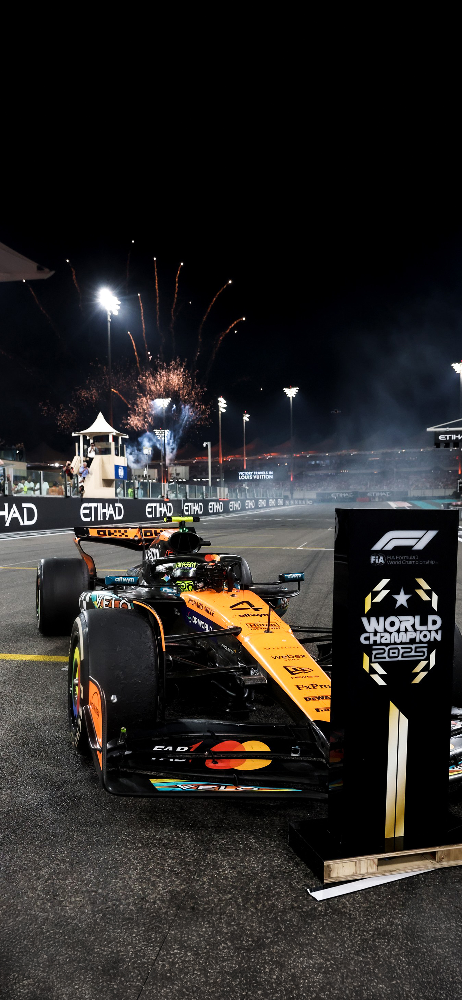

| SIRA | PİLOT | TAKIM | PUAN |
|---|---|---|---|
| 1 | Lando Norris | McLaren | 423 |
| 2 | Max Verstappen | Red Bull Racing | 421 |
| 3 | Oscar Piastri | McLaren | 410 |
| 4 | George Russell | Mercedes | 319 |
| 5 | Charles Leclerc | Ferrari | 242 |
| 6 | Lewis Hamilton | Ferrari | 156 |
| 7 | Kimi Antonelli | Mercedes | 150 |
| 8 | Alexander Albon | Williams | 73 |
| 9 | Carlos Sainz | Williams | 64 |
| 10 | Fernando Alonso | Aston Martin | 56 |
| 11 | Nico Hulkenberg | Kick Sauber | 51 |
| 12 | Isack Hadjar | Racing Bulls | 51 |
| 13 | Oliver Bearman | Haas F1 Team | 41 |
| 14 | Liam Lawson | Racing Bulls | 38 |
| 15 | Esteban Ocon | Haas F1 Team | 38 |
| 16 | Lance Stroll | Aston Martin | 33 |
| 17 | Yuki Tsunoda | Red Bull Racing | 33 |
| 18 | Pierre Gasly | Alpine | 22 |
| 19 | Gabriel Bortoleto | Kick Sauber | 19 |
| 20 | Franco Colapinto | Alpine | 0 |


7 Ocak 1985'te İngiltere'de doğan Lewis, çok küçük yaşlarda babasının hediye ettiği uzaktan kumandalı araba ile yeteneğini sergilemeye başladı. Babası Anthony Hamilton'ın üç farklı işte çalışarak finanse ettiği karting kariyeri, Lewis'in 10 yaşındayken McLaren patronu Ron Dennis'e "Bir gün arabanızı sürmek istiyorum" demesiyle bir peri masalına dönüştü.
2007'de McLaren ile başladığı kariyerinde, ilk yılında şampiyonluğu 1 puanla kaçırıp ikinci yılında tarihin en genç şampiyonu oldu. Mercedes'e geçişiyle sporu baştan aşağı değiştiren Sir Lewis Hamilton; 7 dünya şampiyonluğu, 100'den fazla galibiyet ve 100'den fazla pole pozisyonu ile istatistiksel olarak Formula 1 tarihinin "En Büyüğü" (G.O.A.T) konumuna ulaştı.
2025 yılında çocukluk hayali olan Ferrari'ye transfer olarak spor dünyasını sarsan Hamilton, sadece bir yarışçı değil, aynı zamanda küresel bir moda ikonu ve sosyal sorumluluk lideridir. Kariyerindeki tüm bu başarıların ardından Ferrari'nin kırmızı tulumuyla 8. dünya şampiyonluğunu kovalayan İngiliz efsane, sahip olduğu eşsiz tecrübe ve bitmek bilmeyen rekabetçi ruhuyla motor sporları dünyasının yaşayan en büyük temsilcisidir.

16 Ekim 1997'de Monako'da doğan Leclerc, motor sporlarına olan aşkını vaftiz babası Jules Bianchi'nin yönetimindeki pistlerde kazandı. Ferrari Sürücü Akademisi'ne (FDA) seçilmesiyle hayatı değişen pilot, GP3 ve Formula 2 şampiyonluklarını daha ilk yıllarında kazanarak F1 dünyasına görkemli bir giriş yaptı.
2018'de Sauber ile başladığı yolculukta gösterdiği üstün performans, onu Ferrari tarihindeki en genç ikinci pilot olarak Maranello koltuğuna taşıdı. Ferrari ile çıktığı ilk sezonunda Spa ve Monza gibi efsanevi pistlerde kazandığı zaferlerle Tifosi'nin "Il Principino" (Küçük Prens) lakabını aldı. Kariyerindeki 20'den fazla Pole Pozisyonu başarısı, onun griddeki en iyi sıralama turları pilotu olduğunu kanıtlamaktadır.
Şu an Ferrari projesinin kalbinde yer alan Monakolu, sadece bir pilot değil, aynı zamanda Ferrari'nin şampiyonluk hasretini dindirecek tek kurtarıcı olarak görülmektedir. Sokak pistlerindeki kusursuz sürüşü, mental dayanıklılığı ve takıma olan sarsılmaz bağlılığıyla Leclerc; Ferrari tarihine ismini Michael Schumacher ve Niki Lauda gibi efsanelerin yanına yazdırmak için her yarışta limitleri zorlamaktadır.

30 Eylül 1997 tarihinde Belçika'nın Hasselt şehrinde, eski bir F1 pilotu olan Jos Verstappen ve karting şampiyonu Sophie Kumpen'in oğlu olarak dünyaya geldi. Yarışçı bir genetiğe sahip olması sebebiyle çocukluğu Avrupa'nın dört bir yanındaki karting pistlerinde, babasının sıkı disiplini altında geçti.
Kariyerine 4 yaşında başladıktan sonra 2015 yılında, henüz ehliyeti bile yokken Toro Rosso koltuğuna oturarak F1 tarihinin yarışan en genç pilotu unvanını aldı. 2016'da Red Bull ana takımına yükseldiği ilk yarışta galibiyete ulaşarak "en genç yarış kazanan pilot" rekorunu da kırdı. 2021 yılında Abu Dhabi'deki unutulmaz finalle ilk dünya şampiyonluğunu kazandı ve ardından gelen yıllarda sporu domine ederek üst üste şampiyonluklar ekledi.
Günümüzde "Mad Max" lakabıyla anılan Hollandalı yıldız, toplamda 3 dünya şampiyonluğu ve 50'den fazla yarış galibiyetiyle modern F1'in en büyük gücüdür. Saf hızı, inanılmaz lastik yönetimi ve agresif savunma stiliyle tanınan Verstappen; sadece bir şampiyon değil, aynı zamanda Red Bull mühendisliğinin pistteki kusursuz yansımasıdır.

11 Mayıs 2000'de Japonya'nın Kanagawa eyaletinde doğan Yuki, yarış tutkusunu babasının yerel yarışlarını izleyerek kazandı. Honda'nın genç sürücü programı (HFDP) tarafından keşfedilen yeteneği, onu Japonya'nın yerel pistlerinden alıp Avrupa'nın en zorlu alt serilerine kadar taşıdı.
2020 Formula 2 sezonunu üçüncü tamamlayıp "Yılın Çaylağı" seçildikten sonra 2021'de Formula 1'e adım attı. Gridin en kısa boylu pilotu (1.59m) olmasına rağmen, direksiyon başında sergilediği devasa hırsı ve takım telsizindeki sansürlenemeyen, dürüst tepkileriyle kısa sürede küresel bir hayran kitlesi edindi. Özellikle frenleme noktalarındaki cesareti ve geç fren yapma yeteneğiyle "geçiş ustası" kimliğini kazandı.
Kariyerinin ilk yıllarındaki inişli çıkışlı grafiğini geride bırakan Yuki, artık Red Bull ailesinin en güvenilir isimlerinden biridir. Kariyerinde kazandığı "Yılın En İyi Çıkış Yapan Pilotu" ödüllerinin yanına istikrarlı puanlar ekleyen Japon sürücü, teknik geri bildirimleri ve Honda ile olan güçlü bağı sayesinde Japonya'nın Formula 1 tarihindeki en başarılı temsilcisi olma yolunda emin adımlarla ilerlemektedir.

15 Şubat 1998 tarihinde İngiltere'nin King's Lynn şehrinde doğan George Russell, motor sporlarına henüz 8 yaşındayken karting ile adım attı. Formula 4, Formula 3 ve Formula 2 şampiyonalarını art arda kazanarak "hat-trick" yapan nadir pilotlardan biri olması, onun Mercedes tarafından "geleceğin şampiyonu" olarak seçilmesini sağladı.
2019'da Williams ile başladığı F1 kariyerinde, kısıtlı araç potansiyeline rağmen sergilediği inanılmaz performanslar ona "Mr. Consistency" (Bay İstikrar) lakabını kazandırdı. 2022'de Mercedes ana koltuğuna oturan Russell, aynı yıl Brezilya'da ilk galibiyetini alarak gümüş okların yeni dönem lideri olduğunu kanıtladı. Teknik geri bildirimi ve mühendislik düzeyindeki analiz yeteneğiyle tanınmaktadır.
Günümüzde Mercedes'in bir numaralı ismi konumuna yükselen İngiliz pilot, kusursuz tek tur hızı ve stratejik zekasıyla gridin en komple sürücülerinden biridir. Hamilton sonrası dönemde takımı yeniden dünya şampiyonluğu seviyesine taşımak için liderlik vasıflarını her yarışta sergilemekte ve Mercedes'in teknolojik gelişimine doğrudan yön vermektedir.

25 Ağustos 2006'da İtalya'nın Bologna şehrinde doğan Antonelli, motor sporları dünyasına kelimenin tam anlamıyla bir "meteor" gibi düştü. Yarışçı bir aileden gelen Kimi, Mercedes Genç Sürücü Programı'na henüz 12 yaşındayken kabul edildi ve yarıştığı her kategoride (F4, FRECA) rakiplerini domine ederek şampiyonluğa ulaştı.
Formula 3 kategorisini doğrudan atlayarak Formula 2'ye geçmesi ve orada gösterdiği üstün yetenek, Mercedes patronu Toto Wolff'un onu doğrudan Lewis Hamilton'ın boşalan koltuğuna oturtmasını sağladı. 18 yaşında Mercedes koltuğuna oturması, onu F1 tarihinin en genç ve en çok beklenti yaratan isimlerinden biri haline getirdi. İnanılmaz doğal yeteneği ve öğrenme hızıyla "yeni Max Verstappen" olarak nitelendirilmektedir.
İtalyan pilot, hızı ve baskı altındaki soğukkanlılığıyla yeni nesil sürücülerin bayrak taşıyıcısı olmaya adaydır. Mercedes'in bu cesur hamlesiyle F1'in yeni süper yıldızı olma yolunda ilerleyen Antonelli, direksiyon başındaki olgunluğu ve teknik kavrayışıyla sadece İtalya'nın değil, tüm Formula 1 dünyasının gelecekteki şampiyonluk umudu olarak görülmektedir.

13 Kasım 1999'da İngiltere'nin Bristol şehrinde doğan Lando Norris, motor sporlarına çok küçük yaşta motorsiklet yarışlarına ilgi duyarak başlasa da, ailesinin yönlendirmesiyle kartinge geçiş yaptı. 2014 yılında kartingde dünya şampiyonu olarak bu unvanı kazanan en genç pilot oldu. McLaren'in genç sürücü akademisine kabul edilmesiyle kariyer basamaklarını hızla tırmandı ve 2019 yılında henüz 19 yaşındayken Formula 1 koltuğuna oturdu.
Kariyerinin ilk yıllarında sempatik kişiliği ve sosyal medyadaki aktifliğiyle "yeni nesil pilot" profilini çizen Norris, pist üzerinde ise tam bir savaşçıya dönüştü. McLaren'in orta sıralardan kurtulup yeniden zirveye oynama sürecinin en kilit figürü oldu. İlk galibiyetini 2024 Miami Grand Prix'sinde alarak üzerindeki baskıyı atan İngiliz pilot, sadece bir yarış kazanan değil, istikrarıyla korkulan bir rakip haline geldi.
2025 sezonu Lando Norris için kariyerinin zirve noktası oldu. Sezon boyunca sergilediği kusursuz sürüşü, stratejik zekası ve lastik yönetimindeki ustalığıyla rakiplerini geride bırakarak Formula 1 Dünya Şampiyonu unvanına ulaştı. Bu şampiyonlukla McLaren'i yıllar sonra yeniden zirveye taşıyan efsanevi isimlerden biri olan Norris, artık modern Formula 1 dünyasının en büyük yıldızı ve şampiyonu olarak griddeki yerini korumaktadır.

6 Nisan 2001'de Avustralya'nın Melbourne şehrinde doğan Piastri, uzaktan kumandalı araba yarışlarıyla başlayan tutkusunu karting pistlerine taşıdı. Alt serilerde (F3 ve F2) üst üste, çaylak yıllarında şampiyon olarak Michael Schumacher ve Lewis Hamilton gibi efsanelerin dahi başaramadığı bir istatistiğe imza attı.
2023 yılında büyük bir transfer savaşı sonrası McLaren'e katılan Piastri, ilk yarışından itibaren sergilediği buz gibi sakinliğiyle "Iceman" (Buz Adam) lakabını yeniden canlandırdı. Çaylak sezonunda sprint yarışı kazanması ve podyumlar elde etmesi, onun ne kadar nadir bir yetenek olduğunu gösterdi. Baskı altındaki kusursuz yarış yönetimi, rakiplerinin bile saygısını kazanmasını sağladı.
Avustralyalı sürücü, teknik kapasitesi ve hata yapmayan sürüş tarzıyla McLaren'in gelecekteki en büyük şampiyonluk kozudur. Piastri'nin sakinliği, yüksek hızlı virajlardaki cesaretiyle birleştiğinde ortaya durdurulması zor bir şampiyon adayı çıkmaktadır. McLaren'in genç ve dinamik kadrosunun en soğukkanlı parçası olarak zirve mücadelesini sürdürmektedir.

23 Mart 1996 tarihinde Londra'da doğan Tayland asıllı İngiliz pilot Alexander Albon, yarış kariyerine 8 yaşında karting ile başladı. Red Bull genç sürücü programında inişli çıkışlı bir süreç geçirdikten sonra, alt serilerdeki üstün performansıyla Formula 1 dünyasının kapılarını araladı.
Kariyerinin başında Red Bull ana takımında Max Verstappen'in yanında yarışma fırsatı bulsa da asıl parlayışını Williams takımına katıldıktan sonra gerçekleştirdi. Takımın yeniden yapılanma sürecinde liderlik rolünü üstlenen Albon, kısıtlı araç potansiyeliyle aldığı puanlar ve stratejik zekasıyla "gridin en az hata yapan pilotlarından biri" unvanını kazandı.
Günümüzde Williams projesinin yüzü olan Albon, sadece hızıyla değil, mühendislik düzeyindeki teknik geri bildirimleriyle de aracın gelişimine yön vermektedir. Tayland'ın F1 tarihindeki en başarılı temsilcisi olarak, Williams'ı eski şanlı günlerine döndürmek için her yarışta limitleri zorlayan tecrübeli bir liderdir.

1 Eylül 1994'te İspanya'nın Madrid şehrinde, dünya ralli efsanesi Carlos Sainz Sr.'ın oğlu olarak doğdu. Babasının izinden gitse de o ralli yerine pist yarışlarını seçti ve Red Bull akademisinde yetişerek 2015 yılında Toro Rosso ile Formula 1'e adım attı.
McLaren ve Ferrari gibi dev takımlarda yarışarak kendini kanıtlayan "Smooth Operator" lakaplı pilot, teknik bilgisi ve çalışma disipliniyle tanınır. Ferrari ile kazandığı zaferlerin ardından 2025 sezonunda Williams'a katılarak spor tarihinin en önemli meydan okumalarından birini kabul etti. İspanyol sürücü, gridin en iyi "yarış okuma" yeteneğine sahip isimlerinden biridir.
Williams'ın şampiyonluk vizyonunda kilit bir rol üstlenen Sainz, tecrübesi ve podyum içgüdüsüyle takımı orta sıraların zirvesine taşımayı hedeflemektedir. Mühendislik düzeyindeki geri bildirimleri ve her türlü hava koşulunda sergilediği tutarlı performansı, onu gridin en saygı duyulan ve teknik becerisi en yüksek pilotu yapmaktadır.

11 Şubat 2002'de Yeni Zelanda'da doğan Lawson, Red Bull akademi programının en dayanıklı ve hırslı pilotlarından biridir. Kariyeri boyunca karşısına çıkan her fırsatı podyumla değerlendirmesi, onu gridin en tehlikeli yedek pilotundan tam zamanlı bir yıldızına dönüştürdü.
2023'te sakatlanan Ricciardo'nun yerine geçtiği birkaç yarışta aldığı puanlarla Red Bull yönetimini etkileyen Lawson, 2025 sezonunda RB koltuğunun sahibi oldu. Agresif sürüş tarzı ve atak yapmaktan çekinmeyen karakteriyle "pistin aslanı" olarak nitelendirilmektedir. Gelecekte Red Bull ana takımı için en büyük adaydır.
Yeni Zelandalı pilot, RB takımıyla orta sıralarda sergilediği rekabetçi performansla dikkatleri üzerine çekmeye devam etmektedir. Yarış içindeki hırsı ve yüksek hız altındaki araç kontrolüyle Lawson, sadece RB'nin değil, tüm Red Bull ailesinin gelecek stratejisinin en önemli parçalarından biridir.

28 Eylül 2004'te Fransa'nın Paris şehrinde doğan Hadjar, Red Bull danışmanı Helmut Marko'nun "küçük profesör" olarak tanımladığı özel bir yetenektir. Kartingden bu yana sergilediği agresif ve korkusuz tarzı, onu alt serilerin en heyecan verici ismi yapmıştır.
2024 Formula 2 sezonundaki şampiyonluk mücadelesinin ardından 2025'te F1'e adım atan Hadjar, Fransız yarışçılık ekolünün en yeni ve en agresif temsilcisidir. Geç frenleme noktalarındaki ustalığı ve yağmurlu havalardaki cesareti, rakiplerinin ondan çekinmesine neden olmaktadır. RB koltuğunda kendisini kanıtlamak için her anı değerlendirmektedir.
Genç Fransız sürücü, hızı ve açık sözlülüğüyle F1 padokuna taze bir kan getirmiştir. RB takımının gelişim sürecinde sergilediği potansiyel, onun gelecekte çok daha büyük başarılar elde edeceğinin habercisidir. Hedefi, vatandaşı Gasly gibi F1 tarihinde kalıcı bir iz bırakmaktır.

29 Temmuz 1981'de İspanya'nın Oviedo şehrinde doğan Alonso, 3 yaşında babasının ablası için yaptığı karting aracıyla yarışmaya başladı. 2005 ve 2006 yıllarında Michael Schumacher'in dominasyonuna son vererek üst üste iki kez dünya şampiyonu oldu ve Formula 1'i İspanya'da bir fenomen haline getirdi.
Kariyeri boyunca Ferrari, McLaren ve Renault gibi dev takımlarda yarışan "El Nano", gridin en teknik ve kurnaz pilotu olarak bilinir. Yarış sırasında stratejiyi pilot kabininden yönetebilen nadir isimlerdendir. 40'lı yaşlarında olmasına rağmen Aston Martin ile kazandığı podyumlar, onun hırsından ve hızından hiçbir şey kaybetmediğini tüm dünyaya kanıtlamıştır.
32 yarış galibiyeti ve 100'den fazla podyumu bulunan İspanyol efsane, Aston Martin'in şampiyonluk vizyonunun en önemli parçasıdır. Kariyerindeki eşsiz tecrübe, teknik geri bildirim gücü ve bitmek bilmeyen rekabetçi ruhuyla Alonso; gridin en tecrübeli ve en saygı duyulan ismi olarak "33. galibiyet" ve 3. şampiyonluk hedefiyle limitleri zorlamaya devam etmektedir.

29 Ekim 1998'de Kanada'nın Montreal şehrinde doğan Lance, milyarder iş insanı Lawrence Stroll'ün oğlu olması sebebiyle kariyerinin başından beri mercek altındaydı. Ancak Formula 3'te kazandığı şampiyonluk ve henüz 18 yaşındayken 2017 Azerbaycan'da Williams ile çıktığı podyum, onun saf yeteneğini kanıtlar nitelikteydi.
Kariyeri boyunca yağmurlu havalardaki üstün performansıyla tanınan Stroll, 2020 Türkiye Grand Prix'sinde aldığı sürpriz pole pozisyonuyla F1 dünyasını sarsmıştı. Islak zemindeki araç kontrolü ve startlardaki agresif yükselişleri, onun en belirgin karakteristik özellikleridir. Aston Martin'in Silverstone'daki devasa yatırımlarının merkezinde yer alan pilotlardan biridir.
Kanadalı sürücü, Aston Martin'in dünya devleri arasına girme sürecinde tecrübeli takım arkadaşlarıyla birlikte önemli bir rol üstlenmektedir. Birden fazla podyum ve pole başarısı bulunan Stroll; fiziksel dayanıklılığı ve takıma olan bağlılığıyla, Aston Martin'in gelecek yıllardaki podyum ve şampiyonluk mücadelesinde kilit isimlerden biri olmaya devam etmektedir.

17 Eylül 1996'da Fransa'nın Évreux kentinde doğan Ocon, motor sporlarına çok zorlu şartlar altında, ailesinin büyük maddi fedakarlıklarıyla başladı. Mercedes akademi programı tarafından keşfedilmesi kariyerinin dönüm noktası oldu ve 2016 yılında F1 dünyasına adım attı.
Kariyeri boyunca "savaşçı" kimliğiyle öne çıkan Fransız pilot, 2021 Macaristan Grand Prix'sinde aldığı sürpriz zaferle kalitesini tüm dünyaya kanıtladı. 2025 yılında Haas takımına transfer olan Ocon, Amerikan ekibinin tecrübeli lideri konumuna geldi. Pist üzerindeki savunma yetenekleri ve pes etmeyen karakteriyle gridin en zor geçilen isimlerinden biridir.
Haas projesinin gelişiminde büyük pay sahibi olan Ocon, hızı ve disipliniyle takıma düzenli puanlar getirmektedir. Genç yaşta başladığı bu zorlu yolculuğu podyumlarla taçlandırmış olan pilot, tecrübesiyle Haas'ı orta sıralarda kalıcı bir güç haline getirmek için tüm mücadelesini sürdürmektedir.

8 Mayıs 2005'te İngiltere'nin Chelmsford şehrinde doğan Bearman, Ferrari Sürücü Akademisi'nin en parlak elmaslarından biri olarak kabul edilmektedir. Alt serilerdeki şampiyonluklarıyla dikkatleri üzerine çeken genç yetenek, modern dönemin en büyük "harika çocuk" adaylarından biri olarak görülmektedir.
2024 yılında Suudi Arabistan'da, apandisiti patlayan Carlos Sainz'ın yerine Ferrari koltuğuna oturarak F1 tarihinin en genç Ferrari pilotu oldu ve ilk yarışında puan alarak dünyayı sarstı. Bu başarısı ona 2025 yılı için Haas takımında tam zamanlı bir koltuk kazandırdı. Saf hızı ve öğrenme kapasitesiyle "geleceğin dünya şampiyonu" adayları arasında gösterilmektedir.
Bearman, Haas koltuğunda kazandığı her tecrübeyle F1 dünyasına ne kadar hazır olduğunu her yarışta kanıtlamaktadır. İngiltere'nin yarışçılık ekolünün son temsilcisi olan Ollie, hızı, mütevazı kişiliği ve baskı altındaki soğukkanlılığıyla Haas'ı üst sıralara taşıyacak en büyük yeteneklerden biridir.

19 Ağustos 1987'de Almanya'da doğan "The Hulk", alt serilerdeki inanılmaz dominasyonuyla F1'e girmiş en yetenekli pilotlardan biri olarak bilinir. Sıralama turlarındaki tek tur hızı ve teknik araç geri bildirimi, mühendisler arasında onu gridin en iyisi yapmaktadır.
Kariyeri boyunca birçok farklı takımda yarışan Hulkenberg, 2025 yılında Audi'nin F1 projesinin temellerini atmak üzere Kick Sauber takımına katıldı. Deneyimli pilot, aracın gelişiminde oynadığı kilit rolle takımın gelecekteki şampiyonluk vizyonunun mimarı konumundadır. İstikrarı ve teknik zekası onun en büyük imzasıdır.
Hulkenberg, Sauber koltuğunda sergilediği performansla "hala en hızlılar arasında" olduğunu her hafta kanıtlamaktadır. Audi'nin F1'e giriş sürecinde liderlik vasıflarıyla öne çıkan Alman pilot, kariyerine bir podyum başarısı eklemek ve takımı üst sıralara taşımak için büyük bir disiplinle çalışmaktadır.

14 Ekim 2004'te Brezilya'nın São Paulo şehrinde doğan Bortoleto, Formula 3 şampiyonluğunu çaylak yılında kazanarak tüm dikkatleri üzerine çekti. Brezilya'nın efsanevi F1 mirasının (Senna, Piquet, Fittipaldi) yeni temsilcisi olarak büyük bir sorumluluğu omuzlamaktadır.
Fernando Alonso'nun menajerlik şirketi tarafından desteklenen ve Formula 2'deki başarısıyla 2025 sezonunda Sauber koltuğuna oturmaya hak kazanan pilot, gridin en zeki sürücüleri arasında gösterilir. Yarış zekası ve sakinliği, genç yaşına rağmen onu olgun bir profesyonel yapmaktadır.
Brezilyalı sürücü, Sauber takımıyla başladığı F1 yolculuğunda ülkesinin uzun süren puan ve podyum hasretini dindirmeyi hedeflemektedir. Hızı ve stratejik kavrayışıyla Sauber'in yeniden yapılanma sürecinde en önemli genç yatırım olan Bortoleto, Brezilya bayrağını yeniden zirveye taşımak için mücadele etmektedir.

7 Şubat 1996'da Fransa'nın Rouen kentinde doğan Gasly, Red Bull akademisinin yetiştirdiği en dirençli pilotlardan biridir. Kariyerindeki zorlu dönemlere rağmen asla vazgeçmeyen karakteri, onu bugün gridin en saygın isimlerinden biri konumuna getirmiştir.
2020 İtalya Grand Prix'sindeki mucizevi zaferiyle F1 tarihine geçen Gasly, bu başarısıyla orta sınıf araçlarla neler yapabileceğini kanıtladı. 2025 sezonunda Alpine takımının ana lideri olarak yarışan Fransız pilot, ülkesinin markasını zirveye taşımak için büyük bir sorumluluk taşımaktadır. Agresif ama kontrollü sürüş tarzıyla her zaman puan mücadelesinin içindedir.
Alpine'in teknolojik atılımında kilit rol oynayan Gasly, tecrübesi ve hızıyla takımı orta sıraların liderliğine hazırlamaktadır. Kariyerinde podyumlar ve galibiyetler bulunan Fransız sürücü, hem kendi kariyerini hem de takımını yeniden podyum mücadelesine dahil etmek için limitleri zorlamaya devam etmektedir.

27 Mayıs 2003'te Arjantin'in Pilar şehrinde doğan Colapinto, Latin Amerika'nın motor sporlarındaki yeni büyük umududur. Maddi zorluklara ve Arjantin'den Avrupa'ya uzanan uzun yola rağmen, saf yeteneği sayesinde her kategoride kendini göstermeyi başarmıştır.
2024 sezonunun ortasında Williams koltuğuna oturarak başladığı F1 macerasında, hiç bilmediği pistlerde gösterdiği inanılmaz performansla Alpine takımının dikkatini çekti ve 2025 yılı için tam zamanlı sözleşmeyi imzaladı. Arjantin halkının tutkulu desteğini arkasına alan pilot, hızı ve geçiş yapma cesaretiyle gridin en heyecan verici yeni yüzlerinden biridir.
Colapinto, Alpine bünyesinde kazandığı tecrübeyle F1 dünyasında kalıcı bir yer edinmeyi hedeflemektedir. Kariyerinin henüz başında olmasına rağmen sergilediği olgunluk ve hatasız yarış yönetimi, onu gelecekte podyumların düzenli bir adayı yapacak potansiyeli taşımaktadır.